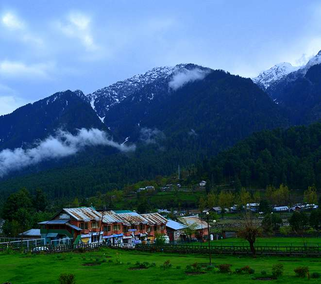

Places

Srinagar
Srinagar in Kashmir is known for Dal Lake, houseboats, and Mughal gardens, offering serene beauty.

Pahalgam
Pahalgam in Kashmir is a scenic hill station famous for its lush valleys and outdoor activities.
Anantnag
Anantnag in Kashmir is famed for its historic temples, scenic landscapes, and bustling markets.

Sonamarg
Sonamarg in Kashmir is famous for its glaciers, meadows, and trekking trails.
Pulwama
Pulwama in Kashmir is known for its scenic orchards, and saffron fields.